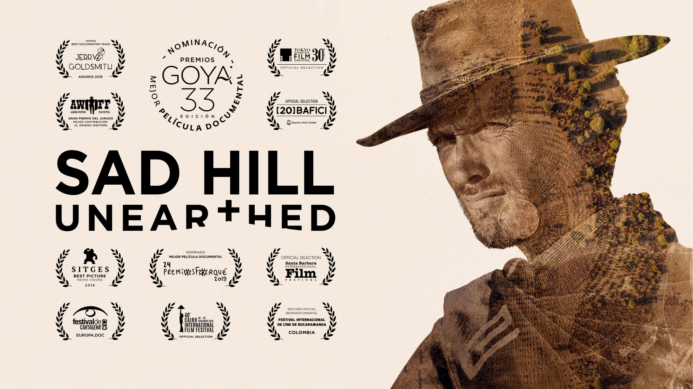

Desenterrando Sad Hill
La reconstrucción del cementerio construido en España para la secuencia final de la película "El bueno, el feo y el malo".
Desenterrando Sad Hill ("Sad Hill Unearthed" en inglés) es un largometraje documental dirigido por Guillermo de Oliveira sobre la increíble historia de una de las localizaciones más famosas de la historia del cine. Ganador de la Medalla del Círculo de Escritores Cinematográficos 2019, nominado a Mejor Largometraje Documental en los Premios Forqué 2019 y a Mejor Película Documental en la 33 Edición de los Premios Goya.
En 1966, el Ejercito Español construyó un enorme cementerio con más de 5.000 tumbas en el Valle de Mirandilla en Burgos para la escena final de la película “El bueno, el feo y el malo”. El lugar quedó completamente abandonado tras el rodaje y durante cuarenta y ocho años la vegetación cubrió cada tumba.
Cuarenta y ocho años después, un grupo de románticos deciden que ya es hora de desenterrar el cementerio. Esta es su historia.